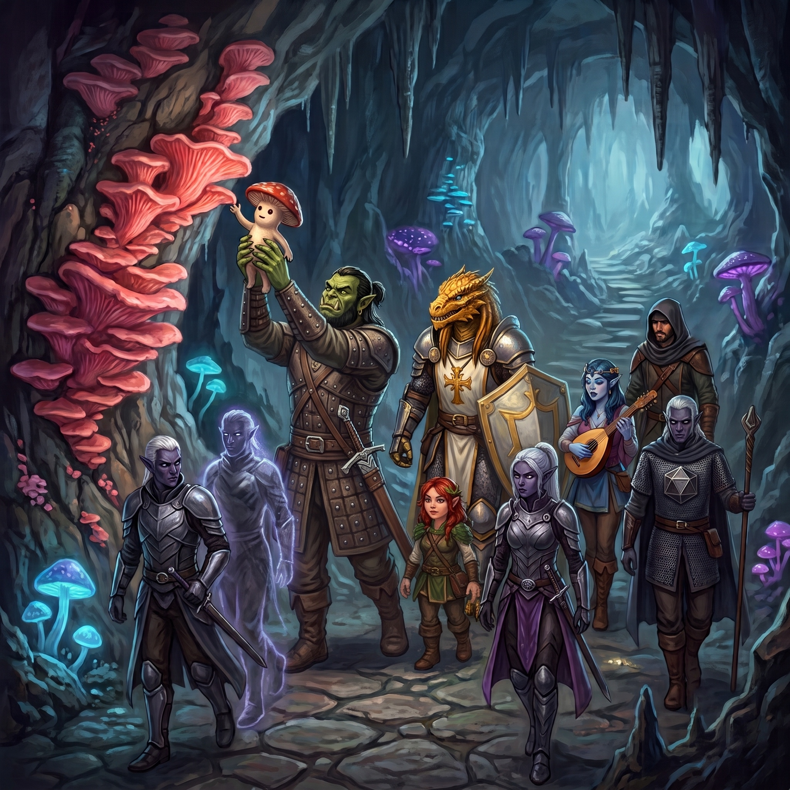

The ropers lay still at last, three grinding columns of stone and hide slumped across the glowing cavern floor, and the company allowed itself the small, grim luxury of catching its breath. Doctor Pepe slipped out of sight into a fissure at the cavern’s edge and began working it for whatever the dark might be hiding.
Therin sagged against a boulder and confided to Aedric, at some length, just how thoroughly the ropers had used him up: the exact vintage of hurt, the precise exhaustion of his reserves. Aedric passed the complaint along to Serath instead, and got back the Taskhand’s usual answer: they should press on.
“Not just yet.” Therin peeled one creature open and came away with the hilt of a broken dagger, a small handful of uncut gems, and a vial slick with gore that proved, once wiped clean, to be a healing potion. Kragor and Elara took the second between them, the orc’s longsword doing the unpleasant work of the incision. This turned up more stones and a second vial: a potion of climbing. The third and largest fell to Scarlet. Still wearing the moorbounder’s shape, she ripped it open. Kragor, noting Scarlet’s lack of digits, waded in beside her to haul the takings free: the richest cache of the three, a scatter of loose gems glittering incongruously against the creature’s stony innards, and another gore-slicked vial of climbing potion.
It was near this last roper that they found the corpse.
It lay half-hidden against the cavern wall, small and humanoid and long dead, wrapped in a fine web of pale filament that had grown up and through it like something claiming its due. Who it had been, how long it had lain there, what had killed it—all of that was long past telling. Therin turned to Serath and asked what he made of it. Serath crouched over it, studied it in silence for a long moment, and delivered his considered judgment: “It would seem to be a body.” Doctor Pepe, curiosity outpacing caution, began brushing the strands aside to get a better look.
A cloud of fine dust bloomed up around him and settled over those gathered near the corpse like pollen on a still day. What followed arrived as a single shared image dropping into every mind the dust had touched, sharp and unbidden: a roper, teeth bared, and beneath the image a raw, unreasoning current of fear. A few heartbeats later it came again, the same fear wearing a different face, a moorbounder’s jaws gaping wide in the dark.
Therin rounded on Serath, demanding to know what in the Nine Hells that had been. The Taskhand, more curious than alarmed, asked instead about mushrooms—and there, tucked into a fold of stone near the corpse, they saw it: a myconid, small and round and pale, calmly watching them. It had, quite plainly, been watching for some time already.
Kragor reached for it with the trained edge of his telepathy, expecting the usual one-sided labor of projecting a thought and hoping something answered. Instead the better part of the company found itself, all at once, standing inside a shared dream. A cavern opened in their minds, vast and strange, its floor crowded with puffballs the size of wagons. A tunnel led away from it. And then—unmistakably—the tunnel they themselves had just walked down, seen from behind, nine travelers picking their way through the violet dark.
Kragor responded in kind, pushing back an image of the passage they’d come from, the glow of Faerzress receding behind them. What came back was simple and warm: a direction, sure as a remembered path, and beneath it a feeling of safety, of belonging, of a group held together. Scarlet let her borrowed shape run out of her like water, folding back down into a halfling, and the little mushroom’s eyes went wide with what could only be surprise.
Then, unprompted, a new image arrived, warm and unmistakable in its meaning: the puffball cavern from that first vision, and the company gathered there among the great pale domes—happy, safe, wanted. The creature meant to go home, and it meant its new friends to come along. Therin, still nursing his grievances, pushed a narrower question—whether it was safe to rest right here, in the cavern the ropers had kept—and got back a simpler answer still: the ropers were dead. Elara drifted closer, her cloak billowing theatrically in air that did not move, and the myconid folded itself down and went still and quiet in the way of a mushroom pretending very hard to be exactly that. Scarlet reached out once more and received, for her trouble, the same happy vision of that fungal home, the same warm undertow of safety.
It was Kragor who put the case to Serath and the rest: the creature was offering to lead them home, and he thought they should follow. Therin objected at once, and at length—they were battered, their strength half spent, and nobody had sent them into the Underdark to go visiting mushrooms. Serath saw no harm in it: myconids were known to be generally friendly, the village lay in the direction they were already headed, and the little creature had done nothing worse than share its dreams with them. Scarlet and Elara sided with the mushroom. That settled it.
Therin, unconvinced and unhappy about it, stalked off to sulk while the rest of the party settled in for a short rest. Serath watched him go, plainly disapproving.
Kragor spent part of the rest checking on Brennik, and found the young recruit still fizzing with the battle’s leftover excitement. He had grown up on miners’ stories of ropers, it turned out, and could scarcely believe he had now fought three of them and lived. The gems they’d taken from the ropers’ innards, once properly counted, amounted to a small fortune: seventeen modest stones worth twenty gold apiece, a diamond worth three hundred, an emerald and a fine tourmaline worth a hundred each, a tiger’s eye worth fifty—eight hundred and ninety gold all told. Reward enough, at least, for the trouble.
The mushroom—Kragor had taken to calling it Sprout, and the name had quietly spread through the company—came and leaned their small round body against his as the resting hour wound to a close, apparently finished with whatever meal they had been making of their surroundings. Kragor asked, in the wordless way the two of them had found, whether Sprout had more spores to share with the others; the answer was no, and shortly after, as the party stirred and made ready to move, the connection between their minds simply stopped, the way a held breath finally lets go. Elara took up her flute and played the creature a tune, and Sprout swayed back and forth to the music with what looked, for all the world, like pleasure.
When it came time to move, Kragor lifted Sprout onto his shoulders, and the little myconid rode there as the company struck out for whatever home lay behind the visions. The Faerzress thinned as they walked, its cold light guttering low, and after the better part of an hour a new growth began to thread the walls: fungus the color of coral, pink and strange, running through the stone like veins.

Sprout puffed a fresh cloud of spores over the party, engulfing everyone but Aedric, who was ranging too far ahead for the cloud to reach him. The image that arrived was a request, plain as pointing: Kragor, seen from the outside, lifting Sprout up to the coral vein. Kragor obliged. Hoisted to the wall, Sprout pressed a small hand flat against the pink, and the link the spores had woven among the party suddenly held far more minds than their own, feeling upon feeling arriving faster than thought could sort them.
Therin, wary again, asked Serath whether this was something to worry about. The myconids further south, the Taskhand said, were known to be peaceful; there was no reason to expect hostility. Reason did little to prepare them for the sheer volume of a village all thinking at once. Song, first, distant and layered, many voices at once. Then flashes of pain, of violence—something built like a duergar, its hair standing in iron spikes, striking down at a myconid that had no way to strike back. And beneath it all, running on and on, the simple daily current of a people talking to one another the only way they knew how: joy, boredom, hunger, comfort, an entire village’s worth of small feeling pressed into a single unbroken hum. It was, all of them agreed without needing to say so, a great deal to take in at once. Sprout lifted their hand from the wall and the village was gone from their heads all at once, the link shrinking back down to the company and their small guide. The little myconid looked enormously pleased with themselves, and urged the company onward.
They walked on. The coral-pink strands ran alongside their path now like a guide rope, though the light around them had gone from Faerzress-glow to true dark, and Doctor Pepe found himself seeing by grace of the dim violet orbs Serath conjured and kept drifting along overhead. The quiet that settled over the party felt like reverence, as though the dark itself were listening.
An hour of that quiet later, the spore-thread that had loosely bound their minds together finally faded out, and the cavern began to narrow toward a fork: one tunnel arcing down and to the left, the other holding level and bearing right, the coral-pink vein running on into the right-hand dark. Sprout, still perched on Kragor’s shoulders, pointed right. Serath stopped where he stood and urged the left-hand path: the mission had waited long enough. It was Kragor who argued him down. The village lay close, Sprout was owed a homecoming, and the party was spent—the extra hours they had already pushed through that day had worn some of the company to the bone. A real rest behind friendly walls was worth more than the few hours the other tunnel might save. Serath relented.
The right-hand tunnel had not carried them far before Sprout could contain themself no longer. Another cloud of spores burst from them, and this time the feeling that came through needed no translation: pure, unfiltered excitement, the kind that has no room left for words. Ahead, in the gloom, six myconids of varying shapes and sizes stood waiting, flanked by a pair of towering giants wrapped in the same pale fibrous mat that had shrouded the corpse back at the ropers’ lair. The eight came on with weapons in hand, and Kragor pressed Sprout for a plain answer: friend, or foe? What came back was an image of a fallen giant lifted and re-animated, given purpose again by myconid hands—dead things granted a second and stranger sort of life in the myconids’ service.
A voice reached them before the myconids did. It was layered, many-toned, and unmistakably a greeting. “Flesh Talker, thank you for bringing our sporeling back to us.” Sprout could wait no longer. Kragor set them down and the little myconid went bounding across the stone to clasp hands—or whatever passed for hands—with one of the waiting myconids, practically vibrating with joy.
Serath stepped forward, bowed, and offered the Bright Queen’s greetings. The reply came warm and immediate: they were known—Flesh Talkers from the Dark City—and they were welcome, and they were friends. “Forgive the weapons,” the voice added. “Our Circle has suffered under the pressure of strange and savage humanoids, creatures whose minds scream.” When Serath pressed for the root of the conflict, the answer came measured and careful: that was a matter best raised with their Sovereign, but a danger had begun to strike at the Circle. Serath’s voice sharpened, the diplomat giving way, just slightly, to the intelligence officer beneath: he would hear more, and would they take him to this Sovereign? They would—so long as the weapons stayed sheathed. The sporeling’s return had cheered them greatly, the voice added; it helped replenish losses the Circle had suffered.
The escort turned and led them onward, myconids and reanimated giants alike, through the narrowest stretch of the cavern yet. As they walked, Sprout offered up one last, gentler vision, unprompted: a body failing, and then, somehow, being born again—a lesson this time, the simple turning wheel that myconid life seemed to run on.
They emerged, eventually, into a cavern dominated by a single puffball the size of a building, and watched in silence as it split open along some invisible seam to let a pair of myconids step out before sealing itself again, unhurried, trailing spores. Beyond it lay fungus farms proper—toadstools taller than a man, mushroom groves in ordered rows—and beyond those, a cavern that could have swallowed a guildhall whole, its ceiling lost somewhere in the dark overhead.
Brennik, Elara, and Scarlet stalled at the threshold, overwhelmed by the sheer scale of thought pressing in on them from every side; it was Kragor who reached them mind to mind, a quiet word dropped into each head, calling them back to their own thoughts. Even Serath stood a moment, plainly struck by the room.
At its center stood the Sovereign, taller than any myconid they had yet seen, and radiating a weight of feeling that reached the party before a single word had been spoken. The welcome arrived in that same layered voice: gratitude, once more, for the sporeling’s safe return. Scarlet answered for them. “We’ve really enjoyed Sprout. They’ve been a wonderful guide.” In return came a flash of memory not their own: the roper fight, seen and felt from somewhere outside themselves, as though the Sovereign had watched the whole battle unfold through borrowed eyes.
Serath bowed lower than he had for any of the others and named himself in full—the Taskhand of the Bright Queen, grateful for the welcome of the village. And eager, he added, to learn more of the difficulties their escort had spoken of. The spores drifting through the chamber worked on all of them now as something gentler than shared thought—a warm, clean lightness that settled into tired limbs and quietly raised their spirits. “We have habitat prepared for Flesh Talkers,” the Sovereign told them. “You must stay with us tonight. You are tried. Talk of our difficulties can wait until tomorrow.” An adult myconid stepped forward to lead them out, and as they turned to go, the Sovereign sent one last pulse of spores after them—a parting gift that eased the last of the day’s aches and left the whole company feeling sharper than they had any right to, this deep beneath the world.
Their guide led them from the Sovereign’s chamber back into the great cavern, pressed a hand flat against a stretch of bare wall, and stood back as it opened onto a suite of rooms—chairs, beds, furniture built to angles just slightly wrong for human or orcish frames, myconid hospitality filtered through a different sense of proportion. The adult left them to it, and the party set about shedding armor and the day’s accumulated grime with real relief.
Two smaller myconids arrived before long bearing wooden trays laid with stew and porridge, both surprisingly hearty, both very good. Kragor, working through a bowl, asked Scarlet whether myconids ate fungus of their own growing, or something else besides; she turned the question over with a druid’s practiced eye and allowed that at least some of what filled their bowls had been cultivated on meat. Stray thoughts drifted through the party’s minds now and again, unbidden echoes of the spore-bond not quite faded.
Kragor tested the wall with his telekinetic will and found it answered him just as it had the myconid guide, folding open at a touch. Opening his senses to the unseen, he found what his eyes alone could not: magic threaded through the entire village, faint and pervasive, gathering thickest around the Sovereign’s chamber. The party talked the evening down to its coals, turning over the reanimated giants, the spore-magic, the whole strange hospitality of the place.
Serath joined them before they settled, quiet and thoughtful. They had made the right choice in coming here, he told them; there was information in this place the Bright Queen would want. The creature from the vision was known to him—Aedric and Vornesh had crossed its kind before, and the Kryn believed them to be derro, one of the few truly dangerous things never driven from the Underdark around Xhorhas. “Imagine duergar, if you can,” he offered, “but possessed—criminally insane, and far too prolific.” Kryn soldiers killed them on sight and called for reinforcements; no one had ever found a way to negotiate with them, or any common cause. Some aberrant force drove them, and that was all anyone knew. Nor, he admitted, had the Dynasty ever encountered a circle so large, or one that spoke mind to mind in quite this way.
The party turned the thought over among themselves and agreed on this much: “difficulties” was a very small word for whatever the Sovereign meant to ask of them come morning. Therin said aloud what everyone had already half-guessed: that the Sovereign would ask for their help against the derro. Serath said drily that he hoped Therin was wrong—and reminded them, gently, that they still had a mission of their own waiting at the end of this road.
They said little else. One by one, the party gave themselves over to sleep, the spore-light of the village dimming around them, and whatever the morning held, it would keep until then.